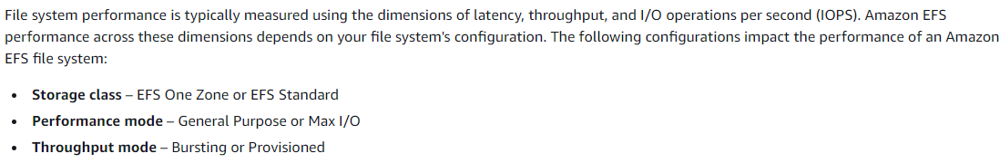

Amazon Elastic File System (Amazon EFS)
Amazon Elastic File System (Amazon EFS) provides a simple, scalable, fully managed elastic NFS file system for use with AWS Cloud services and on-premises resources.
Mounting on supported EC2 instances, IAM authorization, Amazon EFS access points, on-premise Linux client, Auto-mounting EFS file systems when an EC2 instance reboots and creating a new EC2 instance
Amazon EFS is a regional service storing data within and across multiple Availability Zones (AZs) for high availability and durability. Amazon EC2 instances can access your file system across AZs, regions, and VPCs, while on-premises servers can access using AWS Direct Connect or AWS VPN.
The EFS Standard Storage pricing is $0.30 per GB per month.
Amazon EFS Infrequent Access (EFS IA) is a storage class that provides price/performance that is cost-optimized for files, not accessed every day, with storage prices up to 92% lower compared to Amazon EFS Standard.
By default, AWS recommends that you run your application in the Bursting Throughput mode. But, if you're planning to migrate large amounts of data into your file system, consider switching to Provisioned Throughput mode.
You can use Amazon EFS replication to replicate your EFS file system within the same or a different region. This option doesn’t require much effort and can be configured easily with a few steps. It starts replication within minutes.